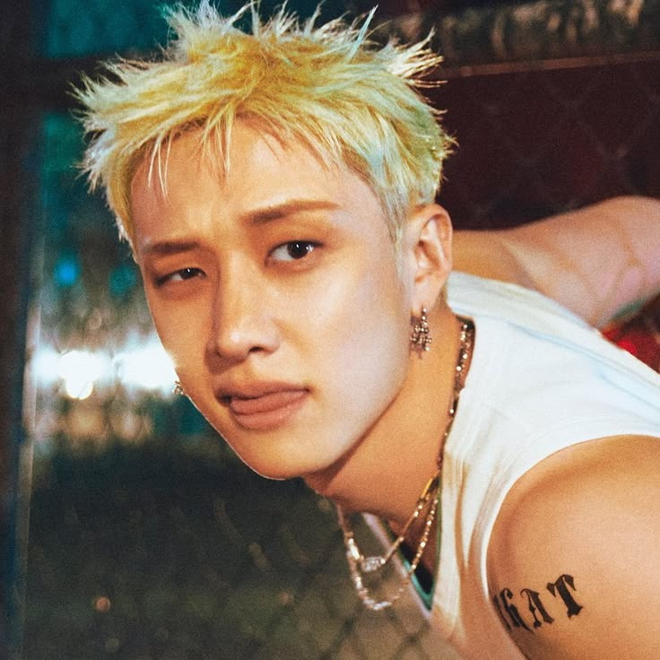
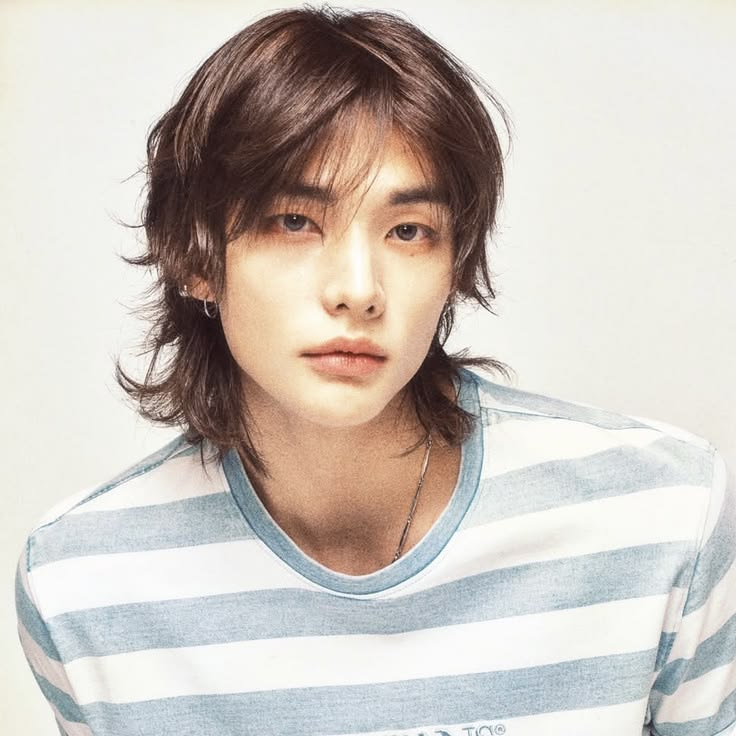
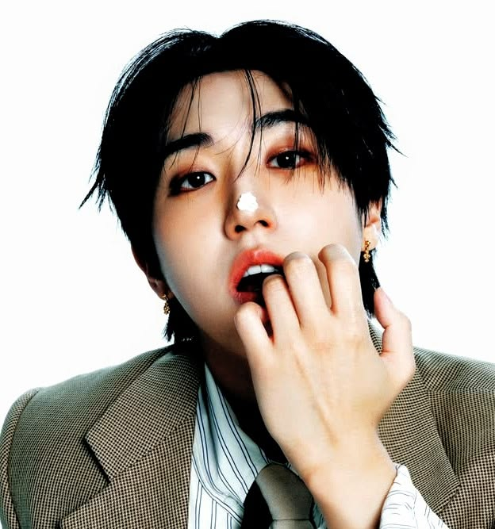
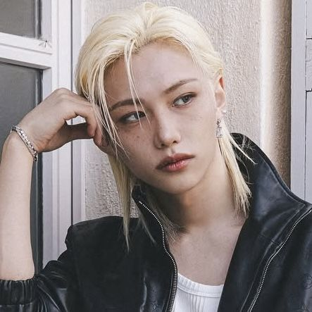
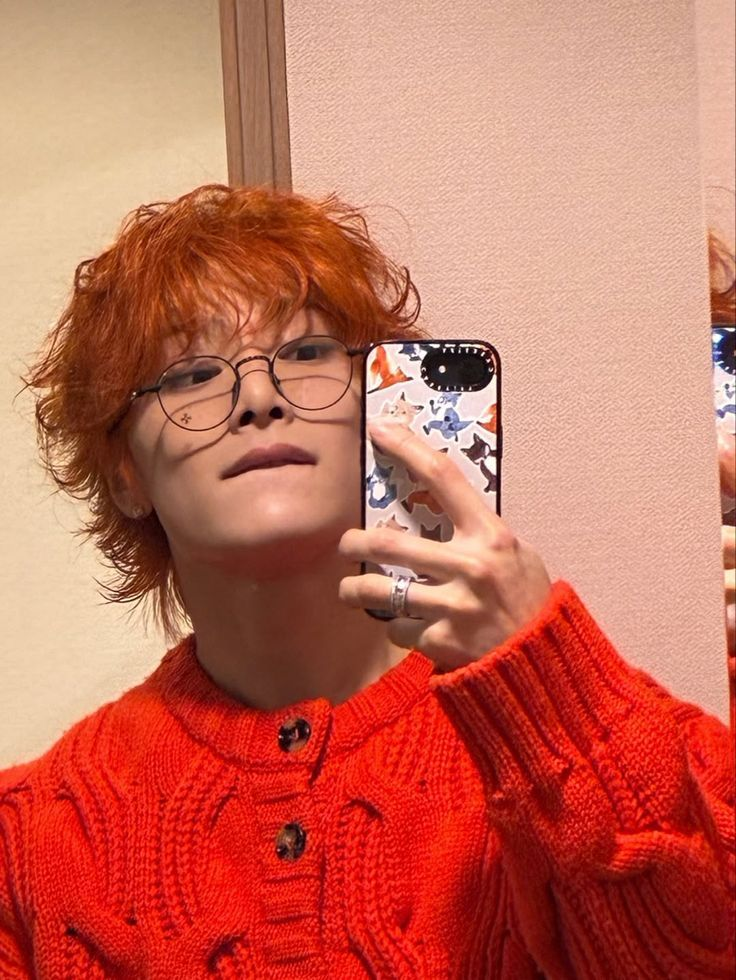

01 - Bang Chan
O líder e pilar do grupo. Produtor principal (3RACHA) e quem formou a equipe.

O líder e pilar do grupo. Produtor principal (3RACHA) e quem formou a equipe.

Dançarino principal (Dance RACHA) com técnica impecável e vocal surpreendente.
Um dos rappers mais poderosos do K-pop e produtor musical essencial (3RACHA).

Dançarino principal (Dance RACHA) e uma presença de palco extremamente expressiva.

Rapper veloz, vocalista de notas altas e produtor genial (3RACHA).

Dono da voz profunda que marca as músicas do grupo (Dance RACHA).
Vocalista principal (Vocal RACHA) focado em estabilidade e emoção.

O maknae do grupo. Vocalista (Vocal RACHA) dedicado com um tom único.